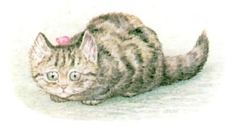
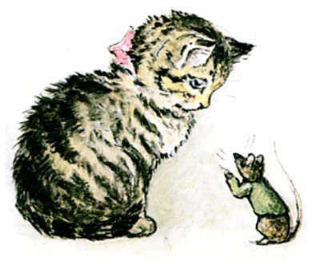
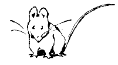
このこは モペットちゃんという こねこ。 ねずみの こえが きになって しかたない おとしごろ。
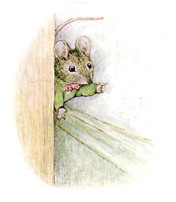
こちらは いつもの ねずみ。 とだなの うらから かおを のぞかせ、 モペットちゃんを からかっています。 こねこなんか こわくありません。
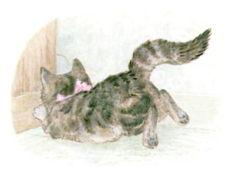
モペットちゃんが とびかかるも とき すでに おそし。 ねずみを とりにがし、 おまけに あたまを ごつん。
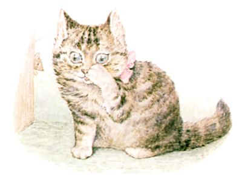
とだなってば、 かたいんにゃから！

ねずみは とだなのうえから モペットちゃんを たかみの けんぶつ。
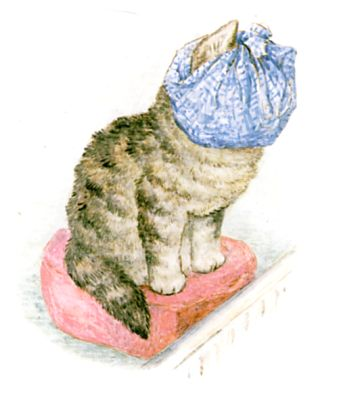
モペットちゃん、 じぶんの あたまを ふきんで くるんで、 だんろのまえに おすわりします。

ねずみは、 あいての ぐあいが わるいとみて、 よびりんの ひもを すべりおりていきました。
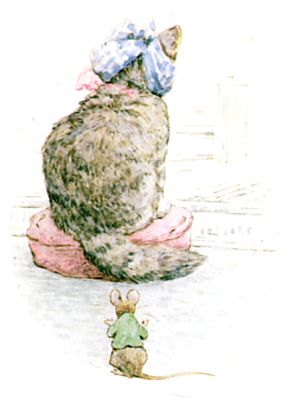
モペットちゃんは どうも ひどくなるばかり。 そこへ ねずみが しのびよります。
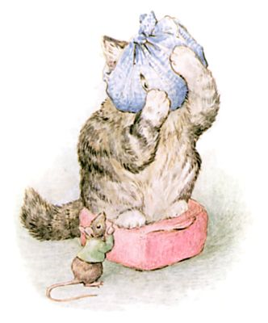
モペットちゃんは そのあたまに つめを あてがい、 ふきんに あけてあった あなから ねずみを にらみました。 ねずみが まぢかに きています。
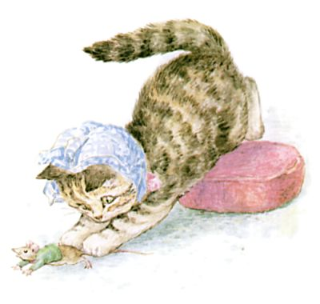
そこで いきなり ―― モペットちゃんが ねずみに とびかかって！
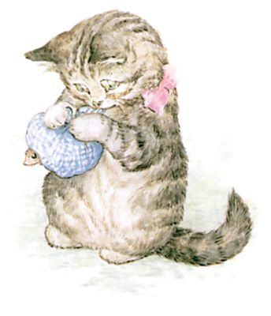
なんと これまで だしぬかれていた モペットちゃん ―― とうとう じぶんから あいてを だまそうとしたのです。 まったく いじわるな モペットちゃん。
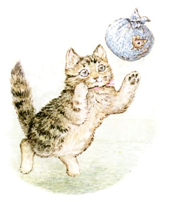
ねずみを ふきんで くるんで むすんで、 ボールみたいに あちこち ほうりなげて。
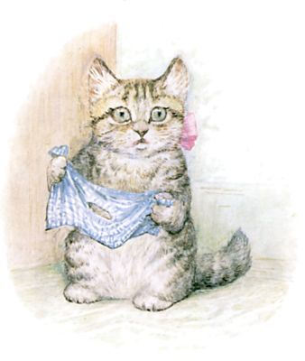
ところが ふきんに あながあったのを すっかり わすれていた モペットちゃん。 さて ほどいてみると ―― ねずみは どこへやら！
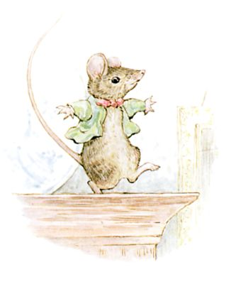
じつは そこから ぬけでて にげていたのでした。 あいつは とだなのうえで たったったっと ひとおどり！
（おしまい）